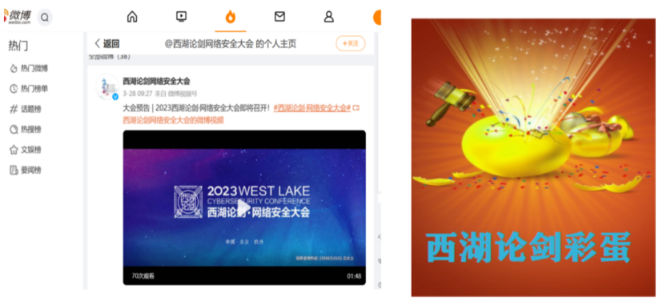
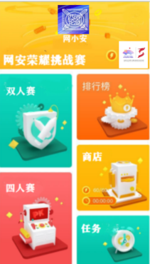

主页
AI动漫角色生成
元宇宙展厅
其他活动策划
创意活动设计


举办一次以“西湖论剑”网络安全大会冠名的网络安全脱口秀大赛。比赛类似脱口秀大赛形式，共分初赛，复赛和决赛三轮，初赛采用海选形式，每名参赛队员要在规定时长5分钟内，完成有关网络安全的脱口秀表演。决赛在西湖论剑大会前三天举行，确定前八位名次，对前三名选手可作为西湖论剑的代言人，参加大会的现场表演。 在2023年的西湖论剑大会开幕当天，设立一档网安圆桌脱口秀节目，用时大约30分钟。现场表演以类似复制央视春节联欢晚会形式展开，由脱口秀大赛前三名选手表演.
在微博上西湖论剑大会官方账号建立新的超话板块（帖子/精华/视频/相册等）。同打开微博热搜即可进入网络安全知识相关有奖问答活动当中。在网络安全大会开展前5天，用户每日首次进入超话，将有机会获得随机掉落的倒计时彩蛋。在“西湖论剑”网络安全大会开展期间，在“西湖论剑”超话中累计签到≥5天，即可获得“网络安全守护人”专属头衔。
在西湖论剑大会前一个月，寻找杭州市内知名的旅行社，作为与其合作游学项目合作伙伴，在其原有旅行方案基础上，共同设计新的线路，增加西湖论剑网络安全亚运体验营活动，参观安恒信息网络安全体验中心活动，在每日的旅游活动间隙，增加网络安全互动和知识讲解，提供相关的网安纪念品。
参与者在描二维码（每个二维码对应一个不同主题或难度的测试或挑战），跳转到微信小程序。在微信小程序中完成相应的测试或挑战（比如选择题、填空题、拼图等），并提交答案根据答案正确与否获得相应的积分或奖励（比如徽章、证书、礼品等），并可以查看自己和其他参与者的排名和进度。
提前用ChatGPT搜集关于西湖论剑和网安的话题，将相关信息录制视频，在展厅滚动播出。在展会现场设置预装好ChatGPT十台终端，让用户可以直接和ChatGPT对话，让其完成一份西湖论剑策划方案，并提交打印报告给主办方打分，在指定的时间评选出得分最高的前十位进行奖励。
在微信搜索小程序“网安荣耀”参与答题。每局不设题数限制，答对一道题可得20分，答错不得分，每题有十秒答题时间限制，最先达到100分的人获胜。比赛参与者可将积分在商城兑换西湖论剑提供精美礼品或相关课程的学时。选取积分最高的前3人免费参加西湖论剑·亚运体验营，并参加西湖论剑大会现场活动。